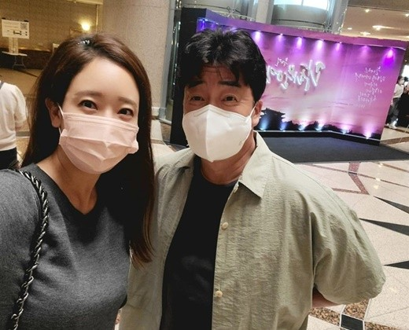

소유진, 15세 연상 백종원과 달달 데이트♥…"청년이 앉아 있는 줄"

[마이데일리 = 김나라 기자] 탤런트 소유진이 남편 백종원과 달달한 근황을 전했다.
소유진은 5일 오후 자신의 인스타그램에 남편 백종원과 뮤지컬 '광화문 연가' 관람 인증샷을 게재했다. 공개된 사진 속 백종원과 소유진 부부는 공연장에서 다정하게 얼굴을 맞대고 카메라를 바라보고 있는 모습. 똑 닮은 훈훈한 미소가 돋보였다. 이와 함께 소유진은 "남편과 데이트. '광화문 연가' 공연 보고 집에 와서는 나한테 최근 들어 제일 얘기를 많이 한 듯. 딱 백주부의 20대 때 이야기라며. 그때의 친구들, 학교, 군대 이야기 듣고 있는데 정말 청년이 앉아 있는 줄. 이것이 진정 공연의 힘인가"라는 메시지를 남겼다. 이어 "배우님들 정말 수고 많았다. 윤도현 오빠 짱! 그리고 김호영, 말이 필요 없는 아주 그냥 연기, 노래 모두 기가 막히고 날아다니고 똑 부러진다. 우리 호이 최고, 고마워!"라고 덧붙였다. 소유진은 지난 2013년 15세 연상의 요리연구가 백종원과 결혼했다. 슬하에 1남 2녀를 두고 있다. [사진 = 소유진 인스타그램] (김나라 기자 kimcountry@mydaily.co.kr) 김나라 기자 kimcountry@mydaily.co.kr 원본 기사 |
연예가 HOT 포토 |